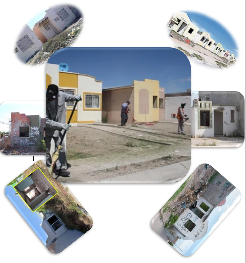
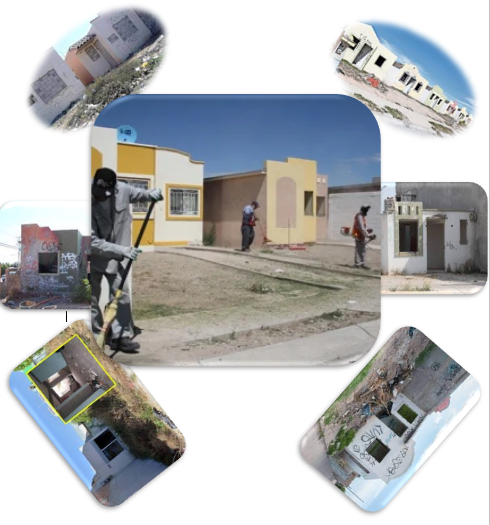
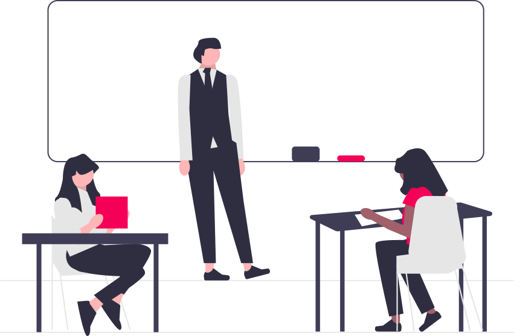

Control, medir y corregir
Inicio →
 

a. ¿Qué estándares te servirían para identificar el peor de los escenarios?
Serian estándares de tiempo ya que se esta estableciendo criterios de tiempo también si se pudiera serian estándares de compromiso
b. ¿Qué estándares te servirían como guía para cerciorarte de que las acciones propuestas para mejorar el desarrollo de tu proyecto son adecuadas?
Podrían ser los estándares de calidad y tiempo por que el proyecto cuenta con un termino aproximado
¿De qué tipo tendrían que ser los estándares para medir los resultados de tu proyecto?
Pueden ser de calidad, cantidad, tiempo, finanzas, etc. ¿Por qué? pueden ser varios como el de tiempo ya que hay uno establecido, el de desarrollo porque también hay puntos establecidos, compromiso ya que es un proyecto colectivo, salud ante todo el cuidado y la precaución para realizar los trabajos
c. Enlista, al menos, 10 estándares que posibiliten el seguimiento del desarrollo de tu proyecto.
Desempeño, Tiempo, Calidad, Compromiso social, salud, seguridad, Organización, Decisión, trabajo en equipo, Disponibilidad
